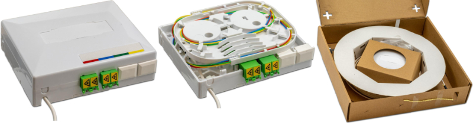
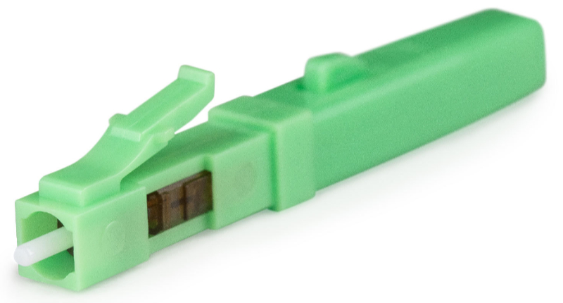
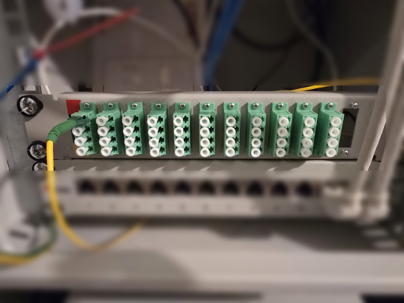
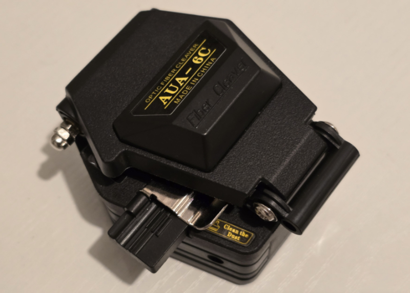
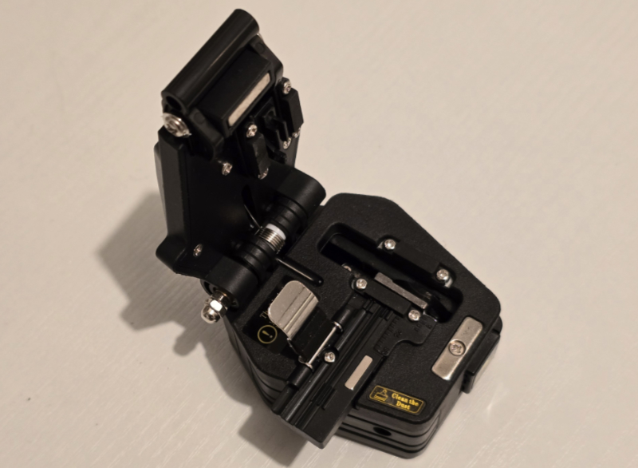
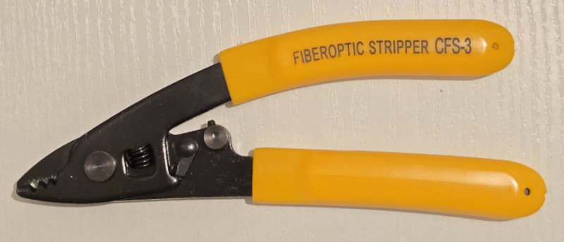
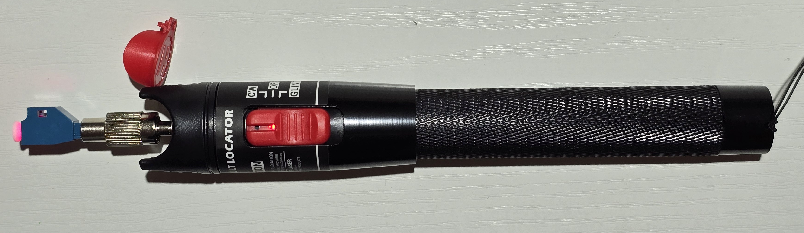
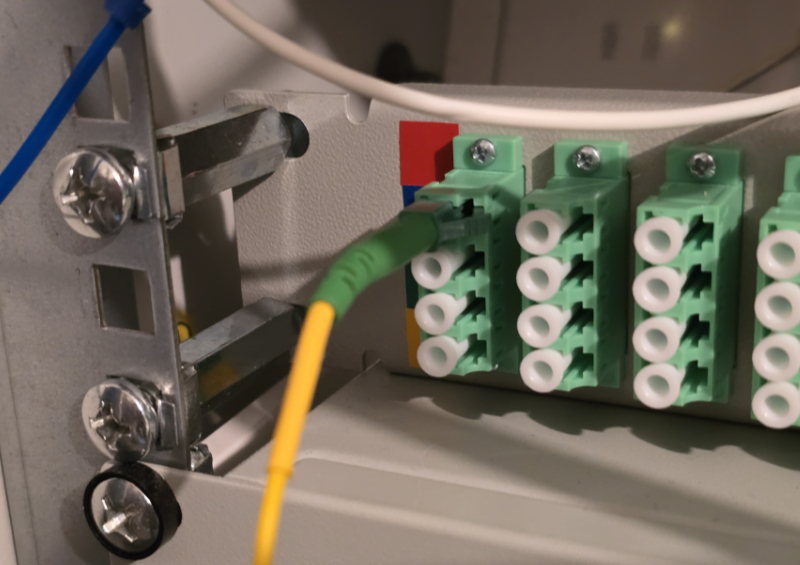
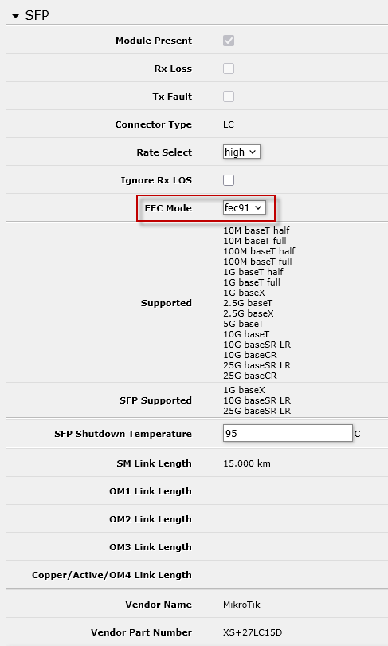
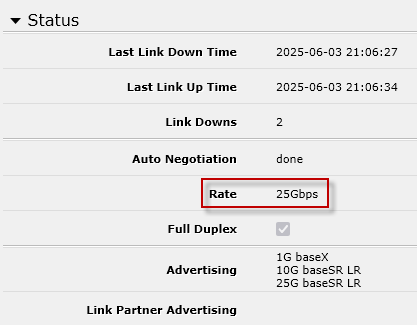

My 25gig LAN infrastructure upgrade 2025
After upgrading my internet connection (
https://objectsandmore.github.io/25gigRouterBuild.html/)
and my main workstation (
https://objectsandmore.github.io/PCBuild2025.html/)
to 25 Gbit/s, it is now time to take care of the LAN infrastructure in my house. No point in having upgraded both endpoints to
high-speed networking when I can't make use of it because of slow connections in between, right?
Existing LAN infrastructure
The LAN in my house is currently only set up for 1 Gbit/s (switches, Cat 5e wiring). Perhaps the wiring would also be good for 2.5 or 5 gbit
(or maybe even 10 gbit), given the short distances between rooms - I will do some experimenting. But I also plan on installing fiber in at
least some of the rooms. Luckily, all rooms are fitted with in-wall conduit/tubing, which is common for houses (mine was built around 2000/01) in my area,
with separate tubing lines for 240V power and low-voltage communications (telephone, cable TV). All conduit lines come together in a central utility room in the
basement, which is also where power and communication lines enter the building. This room serves as my 10" rack location hosting all my IT gear (core switch,
patch panels, Synology DiskStations, Cisco telephone gateway etc.). When I added Ethernet wiring a couple of years ago, I used the existing
low-voltage comm tubing and added shielded Cat 5e wiring alongside the cable TV or telephone wire, which was tight, but doable. Now, for adding fiber, I plan on
adding fiber-optic cable in the tubing used for power. IMHO that should be legal and safe, as fiber-optic cable is non-conductive and should therefore not raise
any electrical concerns.
Rolling out fiber to the rooms
I plan on installing fiber outlets in the rooms next to the existing outlets for power and communications. For the cleanest look, I
would have to go with the same vendor/brand (in my case Feller EDIZIOdue), but their fiber-compatible outlets are both extremely expensive and not very practical
to install (flush mounted standard 70x70 mm outlet size, very tight space, no room for a fiber splice cassette). So I will go with a bigger, surface-mounted
outlet. I will start with connecting my office room first and hope to learn some lessons as I go.
For connecting each room to the central utility room, I will use pre-assembled wall boxes that come with a 4-fiber breakout/drop cable,
one side fitted with a pull loop (to conveniently attach a fish tape for pulling the cable through the tubing), and the other side
fitted with 4 LC/APC connectors in LC/APC couplings (green) integrated in the wall box. Thus, only one side needs to be fitted with LC/APC connectors after
the cable has been pulled through the tubing.

There are basically two options for that:
- splicing pigtails to the 4 fiber ends
- attaching fast connectors to the 4 fiber ends (no splicing required)

My plan is to try option (b) first. If that works out, then I can get by without the additional investment in splicing equipment. If not,
then I can always resort to option (a) later. However, a fiber-optic cleaver will be required in either case for cleanly cutting the fiber
to prepare it for inserting it into a fast connector or for splicing.
Fiber type and connector choices
Multimode vs. Singlemode
Internal (LAN) wiring is typically done with multimode fiber, whereas singlemode fiber is preferred for long-distance wiring. At least that's what I have gathered
from various online sources. As far as I understand, singlemode fiber is more demanding, requiring tighter tolerances and therefore more expensive equipment. But
it looks like singlemode equipment prices have started to come down recently, so it has become much more commonplace. Also, singlemode fiber allows for bidirectional
signals on two different wavelengths on the same fiber, reducing the number of required fibers by half. So, I decided to use singlemode/bidirectional fiber.
Connector Types
LC connectors (much smaller than SC connectors, about half the size) seem to have become a kind of standard for FTTH LAN wiring. Singlemode
LC connectors come in either blue or green, indicating the type of fiber polishing: APC (green) or UPC (blue). Socket and connector polishing/color
always have to match. Green sockets are typically used for wall outlets, while blue connecters are used on the SFP module side, so that's the standard
I will be following.
Fiber-optic patch panel
All fiber lines are coming together in a 10" rack in the utility room. Since that rack already hosts an RJ-45 patch panel for the existing copper wiring,
it will also be a good place to host a fiber-optic patch panel where all fiber lines will be terminated. Continuing with the chosen APC/UPC convention,
the (female) patch sockets will be APC (green). I found an affordable 1u high, 10" fiber-optic patch panel with a total of 12 x 4 = 48 ports from Delock.

Switches
The switches will definitely have to be replaced as they are already a couple of years old and only support up to 1 Gbit/s. I have some older Netgear GS108 switches
and some newer Zyxel GS1200-8 switches (the latter primarily because of their IP multicast support). I have not decided on the secondary switches in the
individual rooms (I will add these as I go), but I chose a Mikrotik CRS510-8XS-2XQ-IN as the primary "core" switch, apparently the only affordable model on
the market at this time with enough 25 gig ports to serve as a central switch.
The core switch will be connected directly to the router/firewall via a 3m 25 gig DAC (Mikrotik XS+DA0003). In my experience, DACs are both cheaper and
become less hot during operation, compared to any other type of connection. This Mikrotik DAC has the additional advantage of supporting all
SFP standards/speeds relevant to me. For the connection between router and core switch, both ends will auto-negotiate to SFP28/25 gig.
The core switch features 8 SFP28 slots (25 gig) and 2 QSFP slots (100 gig). The latter can be divided into 4 25 gig connections each via breakout cables.
Thus, I have a total of 16 25 gig connections at my disposal, one of which will be used for the upstream connection to the router. Downstream, the
following types of connections will be needed:
a second-level switch (Mikrotik CRS310-8G+2S+IN, 8x 2.5 gig Ethernet, 2x 10 gig SFP+) connected via a 1m 25 gig DAC (Mikrotik XS+DA0001)
One of my Synology DiskStations is equipped with a 10 gig ethernet adapter, so this will also be connected
rooms pair of matching transceivers
Component List
Installation Notes
The actual fiber installation went smoothly and was less complex than expected. Granted, fiddling with delicate strands of fibers requires patience
and meticulousness, but in the end it's nothing that any moderately skilled layperson couldn't do. Using fast fiber connectors and a pre-assembled
breakout/drop cable worked well. Splicing was not required for a stable 25 Gbit/s optical link, thus eliminating the need for expensive splicing equipment.
Pulling the drop cable through the existing conduit tubing worked OK. Lots of 3M wire pulling
lubricant (
https://www.3m.com/3M/en_US/p/d/b00040204/)
helped. The cable itself is kevlar-reinforced and therefore resilient enough to withstand some force when being pulled
through tight conduit. With the pre-fitted loop at the pulling end tied to the pulling hook of the fish tape it was quick and easy work.
Initially, I planned to pull the fiber alongside the power wires. But then, probing with the fish tape, I didn't find a continuous path between
rooms. So, I switched to plan B and pulled it alongside the telephone wiring which was straight forward. As the fiber cable is quite thin (outer
diameter only 2.2mm), the remaining space was sufficient.
The cheapish fiber-optic tool kit and AUA-6C fiber cleaver proved to be of unexpectedly good quality. The 3-hole fiber stripping pliers (for stripping the
outer sheath, the inner sheath, and the fiber cladding) are precisely sized to effectively remove each layer but not harm the inner layers.
Turns out that was not quite true, because one of the 4 strands of fiber has broken, snapped off right where the inner sheath had been cut to strip it.
So, I'll have to redo the green strand of fiber and this time be more careful cutting the inner sheath.
I can't judge
the quality of cut produced by the cleaver (I didn't look at it through a microscope), but the fact that I ended up with a stable 5 Gbit/s optical link
suggests that it must be decent.



The fiber-optic tester came in handy for quickly confirming a continuous connection between end points. Plug in one end (must be a UPC/blue connector, as
this particular tester comes with with a blue FC-LC socket adapter), and a nicely focussed beam of bright, visible (red) light should be emitted
on the other end, indicating a good optical connection. It also helps to identify individual strands of fiber (in case the cladding colors are not visible
or mixed up).

I am not 100% happy with the fiber patch panel in my 10" rack cabinet. The patch panel itself is of good quality and definitely worth its money. But there
are two minor problems: firstly, the patch panel does not come with any kind of splicing tray or
cassette, so a couple of centimeters of delicate fibers are exposed behind the panel. For now, I have fixed the unstripped part of the fiber cable to a rack
rail with cable ties, to work as a strain relief. Also, I would need to mount it a bit further back, as any fiber connector plugged in from the front
tends to collide with the cabinet door when closed, bending the fiber beyond its specified radius. Perhaps I will rig up some spacer nuts M6x30 to screw
in the panel from the back of the rack rails, thereby shifting it 3-4 cm further back to give me a bit more clearance in the front.
In the meantime, I have done just that and it works OK. Not pretty and awkward to install, but no more tight bending of the fiber plugged in from the front.

I had a minor problem establishing the link over the matched pair of Mikrotik XS+2733LC15D transceivers (bidrectional 1270nm/1330nm) between my PC and
the Mikrotik CRS510 switch. In the "interfaces/SFP" section of the RouterOS web GUI I had to explicitly set FEC mode to to "fe91":

After that, the link went up immediately - at the nominal rate.
